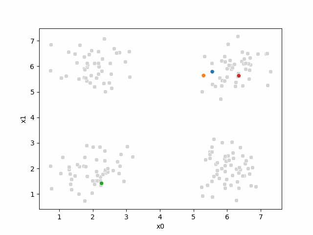
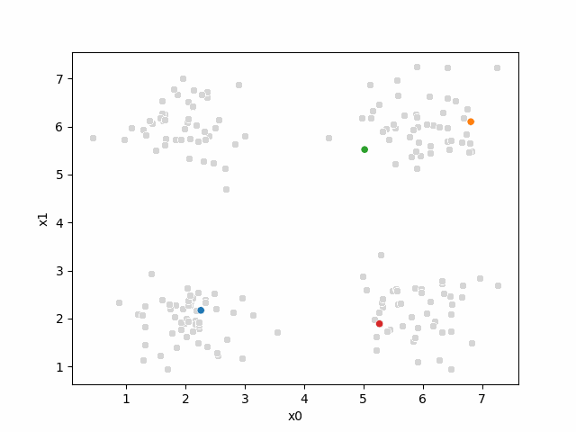
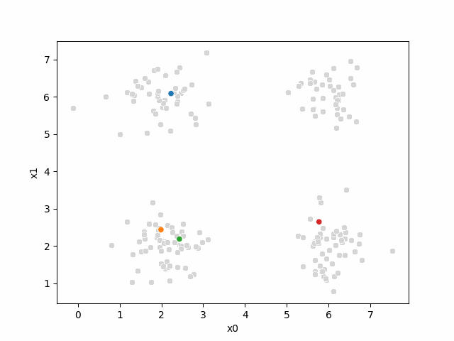
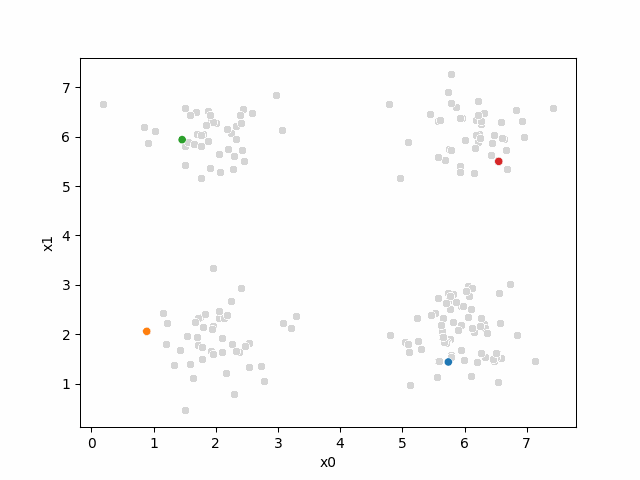
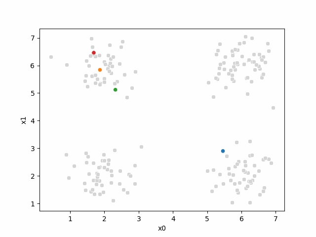

15. Kmeans algorithm#
Computationally, this is a harder problem. Mathematically, we can typically solve problems when we have a number of equations equal to or greater than the number of unknowns. For \(N\) data points ind \(d\) dimensions and \(K\) clusters, we have \(N\) equations and \(N + K*d\) unknowns. This means we have a harder problem to solve.
Clustering is a stochastic (random) algorithm, so it can be a little harder to debug the models and measure performance. For this reason, we are going to look a little more closely at what it actually does than we did with classification.
import matplotlib.pyplot as plt
import numpy as np
import itertools
import seaborn as sns
import pandas as pd
from sklearn import datasets
from sklearn.cluster import KMeans
from sklearn import metrics
import string
import itertools as it
import imageio.v3 as iio
# set global random seed so that the notes are the same each time the site builds
rand_seed =398
np.random.seed(rand_seed)
15.1. How does Kmeans work?#
We will start with some synthetics data and then see how the clustering works.
This code should be fairly readable, but is not strictly required.
One tricky part is zip which is a builtin fuction for iteratinv over groups of things together.
And itertools is a core library for related more iterating.
One way to understand this block of code is to try changing the parameters (the top section) and see how they effect the plots. The var and spacing will have the most impact on the clustering performance.
# ------ Set paramters, change these to adjust the sample
# number of classes (groups)
C = 4
# number of dimensions of the features
D=2
# number of samples
N = 200
# minimum of the means
offset = 2
# distance between means
spacing = 2
# set the variance of the blobs
var = .25
# ------ Get the class labels
# choose the first C uppcase letters using the builtin string class
classes = list(string.ascii_uppercase[:C])
# ----- Pick some means
# get the number of grid locations needed
G = int(np.ceil(np.sqrt(C)))
# get the locations for each axis
grid_locs = a = np.linspace(offset,offset+G*spacing,G)
# compute grid (i,j) for each combination of values above & keep C values
means = [(i,j) for i, j in it.product(grid_locs,grid_locs)][:C]
# store in dictionary with class labels
mu = {c: i for c, i in zip(classes,means)}
# ----- Sample the data
#randomly choose a class for each point, with equal probability
clusters_true = np.random.choice(classes,N)
# draw a random point according to the means from above for each point
data = [np.random.multivariate_normal(mu[c], var*np.eye(D)) for c in clusters_true]
# ----- Store in a dataframe
# rounding to make display neater later
df = pd.DataFrame(data = data,columns = ['x' + str(i) for i in range(D)]).round(2)
# add true cluster
df['true_cluster'] = clusters_true
This gives us a small dataframe with 2 features (D=2) and four clusters (C=4).
We can see the data with the labels
sns.pairplot(data=df,hue='true_cluster')
<seaborn.axisgrid.PairGrid at 0x7f2bbc51f8b0>
this is what the clustering algorithm wil see:
sns.pairplot(data=df)
<seaborn.axisgrid.PairGrid at 0x7f2bb7fd4e80>
15.2. Setup#
First we will make a variable that we can use to pick out the feature columns
data_cols = ['x0','x1']
and we will set a constant as our itertion number
i =0
Here, we’ll set up some helper code.
For more on color palettes see the seaborn docs
def mu_to_df(mu,i):
mu_df = pd.DataFrame(mu,columns=['x0','x1'])
mu_df['iteration'] = str(i)
mu_df['class'] = ['M'+str(i) for i in range(K)]
mu_df['type'] = 'mu'
return mu_df
cmap_pt = sns.color_palette('tab20',8)[1::2]
cmap_mu = sns.color_palette('tab20',8)[0::2]
You can see that this whole color pallete is paired colors, and what the cmap_pt and cmap_mu do is take odd and even subsets of the palette into two separate palettes.
sns.color_palette('tab20',8)
15.3. Initializing the algorithm#
Kmeans starts by setting K, we will use 4, annd selecting hat number of random points to be the starting points as the means.
K =4
mu_0 = df[data_cols].sample(n=K).values
mu_0
array([[5.56, 5.79],
[5.3 , 5.64],
[2.26, 1.42],
[6.35, 5.63]])
then we will use our helper function to make this work
mu_df = mu_to_df(mu_0,i)
mu_df
| x0 | x1 | iteration | class | type | |
|---|---|---|---|---|---|
| 0 | 5.56 | 5.79 | 0 | M0 | mu |
| 1 | 5.30 | 5.64 | 0 | M1 | mu |
| 2 | 2.26 | 1.42 | 0 | M2 | mu |
| 3 | 6.35 | 5.63 | 0 | M3 | mu |
We can see what our algorithm knows:
sfig = sns.scatterplot(data =df,x='x0',y='x1',color='lightgray',legend=False)
# plt.plot(mu[:,0],mu[:,1],marker='s',linewidth=0)
mu_df = mu_to_df(mu_0,i)
sns.scatterplot(data =mu_df,x='x0',y='x1',hue='class',palette=cmap_mu,ax=sfig,legend=False)
# save the figure for later use:
sfig.get_figure().savefig('kmeans00.png')
we have all the points, but no labels for them, and we have these 4 points as our means.
15.4. Assignment step#
Now, we will compute, for each sample which of those four points it is closest to first by taking the difference, squaring it, then summing along each row.
To compute the distance we will first subtract from the mean:
(df[data_cols].loc[0]- mu_0[0])
x0 0.27
x1 -3.78
Name: 0, dtype: float64
then square each
((df[data_cols].loc[0]- mu_0[0])**2)
x0 0.0729
x1 14.2884
Name: 0, dtype: float64
and sum
((df[data_cols].loc[0]- mu_0[0])**2).sum()
14.361300000000002
If we needed the right units on these distances, we would also sqrt but, we actually will just use the distances to figure out which mean is closes to the each point. If \(a > b > c\) then \(\sqrt{a} > \sqrt{b} > \sqrt{c}\) so we do not need the sqrt to get the right end answer so we can save that step, which saves computation.
we can do this fo all of the rows
((df[data_cols]- mu_0[0])**2).sum(axis=1)
0 14.3613
1 20.3125
2 19.9274
3 9.0682
4 15.9188
...
195 32.1458
196 8.7125
197 21.2141
198 0.3200
199 31.0472
Length: 200, dtype: float64
then we can do this for all four means:
[((df[data_cols]- mu_i)**2).sum(axis=1) for mu_i in mu_0]
[0 14.3613
1 20.3125
2 19.9274
3 9.0682
4 15.9188
...
195 32.1458
196 8.7125
197 21.2141
198 0.3200
199 31.0472
Length: 200, dtype: float64,
0 13.4578
1 17.9876
2 18.9745
3 7.5661
4 13.8553
...
195 28.8965
196 7.5344
197 20.5642
198 0.2837
199 27.8161
Length: 200, dtype: float64,
0 13.0930
1 18.4144
2 14.8261
3 18.4025
4 17.1905
...
195 1.3505
196 26.2036
197 19.8106
198 25.9405
199 2.4065
Length: 200, dtype: float64,
0 13.3748
1 27.9922
2 18.2905
3 14.4449
4 22.7673
...
195 38.3485
196 14.1146
197 18.6196
198 0.6641
199 37.6749
Length: 200, dtype: float64]
This gives us a list of 4 data DataFrames, one for each mean (mu), with one row
for each point in the dataset with the distance from that point to the
corresponding mean. We can concatenate these horizontally (axis=1) these into one DataFrame.
pd.concat([((df[data_cols]- mu_i)**2).sum(axis=1) for mu_i in mu_0],axis=1).head()
| 0 | 1 | 2 | 3 | |
|---|---|---|---|---|
| 0 | 14.3613 | 13.4578 | 13.0930 | 13.3748 |
| 1 | 20.3125 | 17.9876 | 18.4144 | 27.9922 |
| 2 | 19.9274 | 18.9745 | 14.8261 | 18.2905 |
| 3 | 9.0682 | 7.5661 | 18.4025 | 14.4449 |
| 4 | 15.9188 | 13.8553 | 17.1905 | 22.7673 |
Now we have one row per sample and one column per mean, with with the distance from that point to the mean. What we want is to calculate the assignment, which
mean is closest, for each point. Using idxmin with axis=1 we take the
minimum across each row and returns the index (location) of that minimum.
pd.concat([((df[data_cols]- mu_i)**2).sum(axis=1) for mu_i in mu_0],axis=1).idxmin(axis=1)
0 2
1 1
2 2
3 1
4 1
..
195 2
196 1
197 3
198 1
199 2
Length: 200, dtype: int64
We’ll save all of this in a column named '0'. Since it is our 0th iteration.
This is called the assignment step.
df[str(i)] = pd.concat([((df[data_cols]- mu_i)**2).sum(axis=1) for mu_i in mu_0],axis=1).idxmin(axis=1)
to see what we have:
df.head()
| x0 | x1 | true_cluster | 0 | |
|---|---|---|---|---|
| 0 | 5.83 | 2.01 | C | 2 |
| 1 | 1.06 | 5.54 | B | 1 |
| 2 | 6.11 | 1.36 | C | 2 |
| 3 | 2.55 | 5.70 | B | 1 |
| 4 | 1.58 | 5.51 | B | 1 |
andd now we can re-plot, we still have the same means, but now we use the '0' column to give the points each a color.
Now we can plot the data, save the axis, and plot the means on top of that.
Seaborn plotting functions return an axis, by saving that to a variable, we
can pass it to the ax parameter of another plotting function so that both
plotting functions go on the same figure.
sfig = sns.scatterplot(data =df,x='x0',y='x1',hue='0',palette=cmap_pt,legend=False)
# plt.plot(mu[:,0],mu[:,1],marker='s',linewidth=0)
mu_df = mu_to_df(mu_0,i)
sns.scatterplot(data =mu_df,x='x0',y='x1',hue='class',palette=cmap_mu,
ax=sfig,legend=False)
sfig.get_figure().savefig('kmeans01.png')
We see that each point is assigned to the lighter shade of its matching mean. These points are the one that is closest to each point, but they’re not the centers of the point clouds. Now, we can compute new means of the points assigned to each cluster, using groupby.
15.5. Updating the means#
mu_1 = df.groupby('0')[data_cols].mean().values
We can plot these again, the same data, but with the new means.
fig = plt.figure()
mu_df = mu_to_df(mu_1,1)
sfig = sns.scatterplot(data =df,x='x0',y='x1',hue='0',palette=cmap_pt,legend=False)
sns.scatterplot(data =mu_df,x='x0',y='x1',hue='class',palette=cmap_mu,ax=sfig,legend=False)
sfig.get_figure().savefig('kmeans02.png')
We see that now the means are in the center of each cluster, but that there are now points in one color that are assigned to other clusters.
So, again we can update the assignments.
i=1 #increment
df[str(i)] = pd.concat([((df[data_cols]-mu_i)**2).sum(axis=1) for mu_i in mu_1],axis=1).idxmin(axis=1)
df.head()
| x0 | x1 | true_cluster | 0 | 1 | |
|---|---|---|---|---|---|
| 0 | 5.83 | 2.01 | C | 2 | 3 |
| 1 | 1.06 | 5.54 | B | 1 | 1 |
| 2 | 6.11 | 1.36 | C | 2 | 3 |
| 3 | 2.55 | 5.70 | B | 1 | 1 |
| 4 | 1.58 | 5.51 | B | 1 | 1 |
And plot again:
sfig = sns.scatterplot(data =df,x='x0',y='x1',hue=str(i),palette=cmap_pt,legend=False)
# plt.plot(mu[:,0],mu[:,1],marker='s',linewidth=0)
mu_df = mu_to_df(mu_1,i)
sns.scatterplot(data =mu_df,x='x0',y='x1',hue='class',palette=cmap_mu,ax=sfig,legend=False)
sfig.get_figure().savefig('kmeans03.png')
we see it improves by the means moved to the center of each color.
15.6. Iterating to completion#
If we keep going back and forth like this, eventually, the assignment step will not change any assignments. We call this condition convergence. We can implement the algorithm with a while loop.
mu_list = [mu_to_df(mu_0,0),mu_to_df(mu_1,1)]
cur_old = str(i-1)
cur_new = str(i)
mu = mu_1
number_changed_assignments = sum(df[cur_old] !=df[cur_new])
while number_changed_assignments >0:
cur_old = cur_new
i +=1
cur_new = str(i)
# update the means and plot with current generating assignments
mu = df.groupby(cur_old)[data_cols].mean().values
mu_df = mu_to_df(mu,i)
mu_list.append(mu_df)
fig = plt.figure()
# plot with old assignments
sfig = sns.scatterplot(data =df,x='x0',y='x1',hue=cur_old,palette=cmap_pt,legend=False)
sns.scatterplot(data =mu_df,x='x0',y='x1',hue='class',palette=cmap_mu,ax=sfig,legend=False)
# save image to combine into a gif for the notes (do not need to do this)
file_num = str(i*2 ).zfill(2)
sfig.get_figure().savefig('kmeans' +file_num + '.png')
# update the assigments and plot with the associated means
df[cur_new] = pd.concat([((df[data_cols]-mu_i)**2).sum(axis=1) for mu_i in mu],axis=1).idxmin(axis=1)
fig = plt.figure()
sfig = sns.scatterplot(data =df,x='x0',y='x1',hue=cur_new,palette=cmap_pt,legend=False)
sns.scatterplot(data =mu_df,x='x0',y='x1',hue='class',palette=cmap_mu,ax=sfig,legend=False)
# save image to combine into a gif for the notes (do not need to do this)
# we are making 2 images per iteration
file_num = str(i*2+1).zfill(2)
sfig.get_figure().savefig('kmeans' +file_num + '.png')
number_changed_assignments = sum(df[cur_old] !=df[cur_new])
print( 'iteration ' + str(i))
iteration 2
iteration 3
15.6.1. animated#
Show code cell content
# make a gif to load
# write the file names
img_files = ['kmeans' + str(ii).zfill(2) +'.png' for ii in range(i*2+1)]
# load the imges back
images = np.stack([iio.imread(img_file) for img_file in img_files],axis=0)
# write as gif
iio.imwrite('kmeans'+str(rand_seed) + '.gif', images,loop=0,duration=1000,plugin='pillow') # Adjust duration as needed

Here are some other runs that I saved. I updated this notebook so that it saved the final gif as a different name based on the random seed, ran it a few times with different seeds then kept one I thought was a good visualization above.



Including this on were it got stuck:

15.6.2. storyboard#
We can also make them a grid:
df_vis = df.melt(id_vars = ['x0','x1'], var_name ='iteration',value_name='class')
df_vis.replace({'class':{i:c for i,c in enumerate(string.ascii_uppercase[:C])}},inplace=True)
df_vis['type'] = 'pt'
df_mu_vis = pd.concat([pd.concat(mu_list),df_vis])
cmap = sns.color_palette('tab20',8)
n_iter = i
sfig = sns.relplot(data=df_mu_vis,x='x0',y='x1',hue='class',col='iteration',
col_wrap=3,hue_order = ['M0','A','M1','B','M2','C','M3','D'],
palette = cmap,size='type',col_order=[str(i) for i in range(n_iter+1)])
15.7. More metrics#
We’ll go back to the iris data
iris_df =sns.load_dataset('iris')
sns.pairplot(iris_df)
<seaborn.axisgrid.PairGrid at 0x7f2bb4357a30>
first let’s cluster it again:
measurement_cols = ['sepal_length','petal_length','sepal_width','petal_width']
iris_X = iris_df[measurement_cols]
we’ll create our object
km3 = KMeans(n_clusters=3)
and save the predictions
y_pred = km3.fit_predict(iris_X)
y_pred[:5]
/opt/hostedtoolcache/Python/3.8.18/x64/lib/python3.8/site-packages/sklearn/cluster/_kmeans.py:1416: FutureWarning: The default value of `n_init` will change from 10 to 'auto' in 1.4. Set the value of `n_init` explicitly to suppress the warning
super()._check_params_vs_input(X, default_n_init=10)
array([0, 0, 0, 0, 0], dtype=int32)
Important
In class, we ran the algorithm a few times and saw that the number changed
We saw the silhouette score last class, which is a true clustering method, so we can use that to see if a clustring algorithm has succeeded on in a real use case where we actually do not have the labels. However if we were checkinng if our implementation of a clustering algorithm worked or if our new clustering algorithm worked, we would test with the actual labels that we do have to know if the algorithm found the same groups we had. We might also want to in a real clustering context see if two different runs of a clustering algorithm were the same, or if two different algorithms on the same data found the same solution. In this case we can use other metrics, like mutual information.
Mutual information measures how much knowing one variable tells about another. It can be interpretted like a correlation for categorical variables.
metrics.adjusted_mutual_info_score(iris_df['species'],y_pred)
0.7551191675800484
This score is pretty good, but not perfect, but the classification with the labels was not either so that makes sense
A variable has 1 AMI with itself:
metrics.adjusted_mutual_info_score(iris_df['species'],iris_df['species'])
1.0
and uncorrelated thing have AMI near 0
metrics.adjusted_mutual_info_score(np.random.choice(4,size=100),
np.random.choice(4,size=100))
0.012048070770028944
15.8. Questions#
15.8.1. what happens if we do not know how many clusters there are?#
There are some clustering algorithms that can also learn the number of clusters, for example the Dirichlet Process Gaussian Mixture Model.
Alternatively, you can try the algorithm with different numbers of clusters and evaluate to determine which one is the best fit.
15.8.2. what’s the difference between synthetic data and data from the gaussian machine learning model.#
They’re both Gaussian data. This data is actually a little bit simpler than the GNB data, because all of the variances are the same.
15.8.3. How do clustering algorithms relate the data to the desired output. is it pureley for humans to be able to understand what the data is or is there some deeper systems going on.#
Clustering can help you discover groups in the data even if they are not available in the real data. It is a way to discover something else that is going on that was not known in advance.
15.8.4. What is a real world example of this algorithm?#
This one is a bit simpler, but slightly more complicated ones (basically changing the distance calculated for the assignment step) are used for real things in production and in research
Some example applications:
one of my lab mates in grad school, used unsupervised learning in collaboration with medical doctors to discover subtypes of COPD (Chronic Obstructive Pluminary Disorder).
Etsy Data Scientists used clustering to discover “styles” of products like geometric, farmhouse, goth, etc.
My Dissertation research was a different type of unsupervised learning but similar, to use brain imagaing data and discover what images different people in a study viewed which images as similar.
a data scientist at ESPN might think there are “types” of players in a sport, they could use data on the players to discover it
a data scientist at a retail company like Walmart or Target might think there are “types” of customers and what to discover them from the data on what people have purchased.
15.8.5. is there ever a case where the elbow of the score and cluster graph is not the best number of clusters for a dataset#
The elbo of the graph is one definition of best. Of course you could have a different definition of best and they may not be the same number.